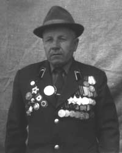

Шапошников Николай Степанович
С сайта http://wwii-soldat.narod.ru

Родился 10 февраля 1921 года в селе Кулешовка Подгоренского района Воронежской области. Отец - Шапошников Степан Александрович. Мать - Шапошникова Ульяна Прокоповна. Супруга - Шапошникова Анастасия Архиповна (1921 г. рожд.). Сын - Валентин (1954 г. рожд.). Дочери: Алла (1947 г. рожд.), Лидия (1955 г. рожд.) и Ольга (1957 г. рожд.).В 1940 году призван в армию. Служил в 156-м стрелковом полку имени Киквидзе. С первых дней участвовал в Великой Отечественной войне в составе 40й отдельной артиллерийско-противотанковой бригады, где был командиром орудия.
В декабре 1941 годы получил легкое ранение. В 1942 году вторично ранен под Ленинградом, позднее направлен в 315-ю стрелковую дивизию 8й гвардейской армии, в составе которой принимал участие в Сталинградской битве. Участник Курской битвы.
Позднее был направлен в состав 1го Белорусского фронта, где принимал участие в форсировании Днепра, Западного Буга, Вислы, Одера и Нейсе, в освобождении Варшавы, Франкфурта-на-Одере и города Кюстрина, а позднее - в штурме Берлина в должности командира противотанкового орудия.
В 1946 году переехал в родное село жены и возглавил строительную бригаду. В бригаде было лишь 5 женщин и 8 инвалидов войны, но за 2 года они сумели переселить всех жителей села Никифоровцы из землянок в дома.
Н. С. Шапошников 10 раз избирался депутатом сельсовета, сейчас возглавляет Совет ветеранов.
Николай Степанович - полный кавалер ордена Славы, награжден орденами Отечественной войны I степени, Красной Звезды, медалями "За отвагу", "За оборону Сталинграда", "За победу над Германией", "За освобождение Варшавы", "За взятие Берлина" и другими.
Живет в селе Никифоровцы Немировского района Винницкой области